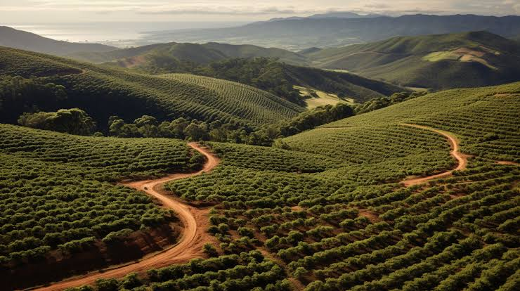
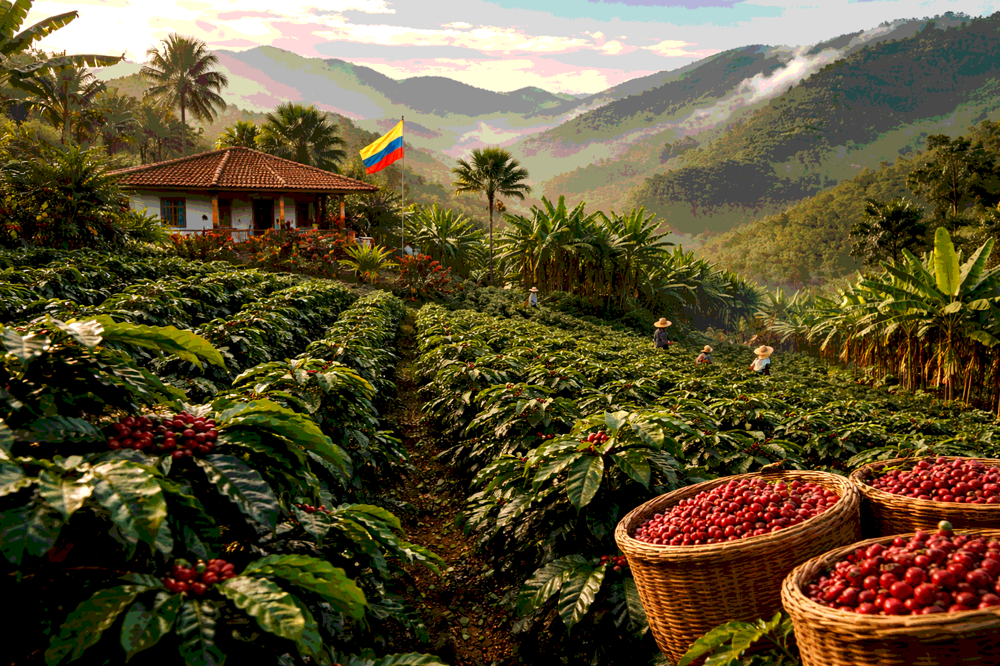
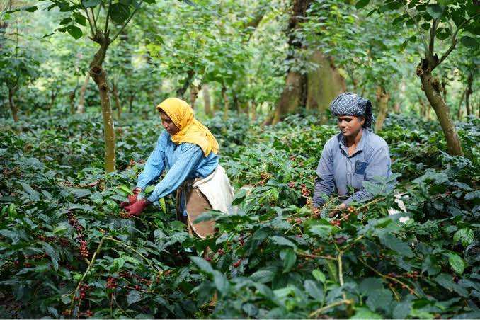
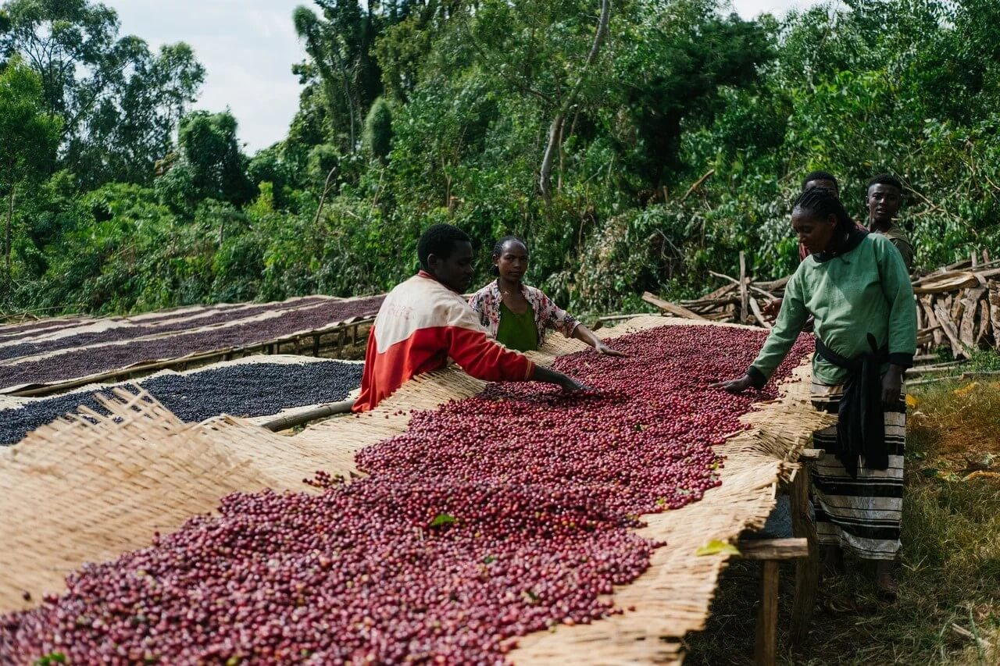
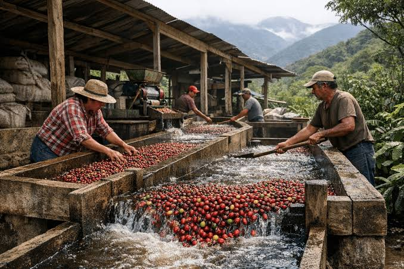
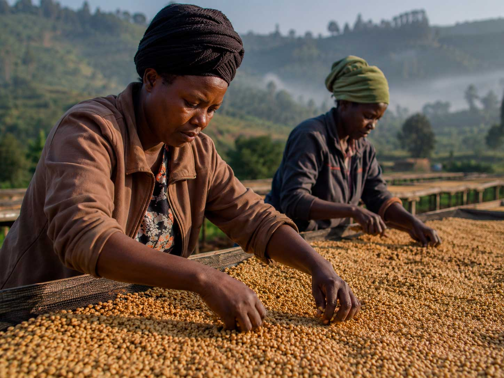

Brazil
Arabica dominates both Brazil and the world as a whole with about 85% of the production; robusta accounts for the remaining 30%.
Learn more
Colombia
Colombia's average annual coffee production of 11.5 million bags is the third total highest in the world.
Learn more
India
Indian coffee, grown mostly in southern India under monsoon rainfall conditions, is also termed as Indian monsooned coffee".
Learn more
Ethiopia
Ethiopian beans can be divided into 3 categories: Longberry, Shortberry, and Mocha.
Learn more

Kenya
The acidic soil in highlands of central Kenya provide excellent conditions for growing coffee plants.
Learn more